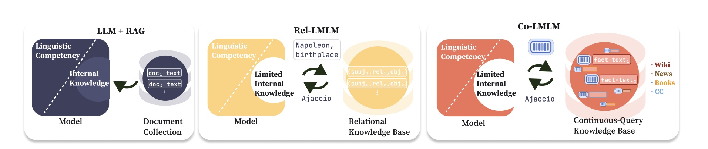
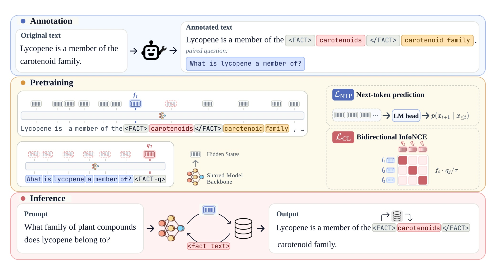
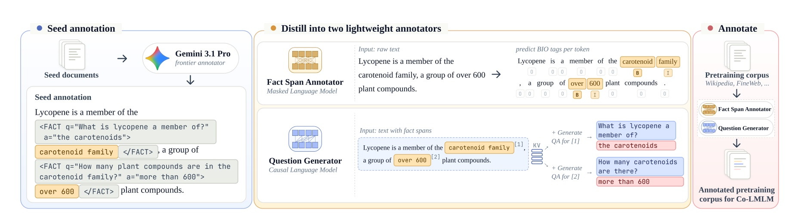
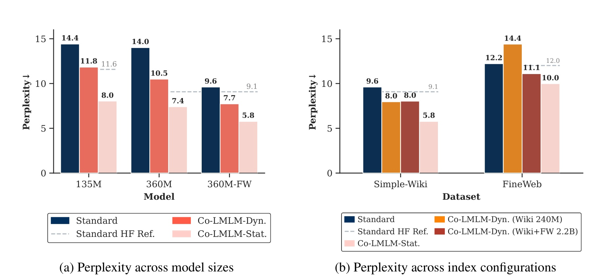
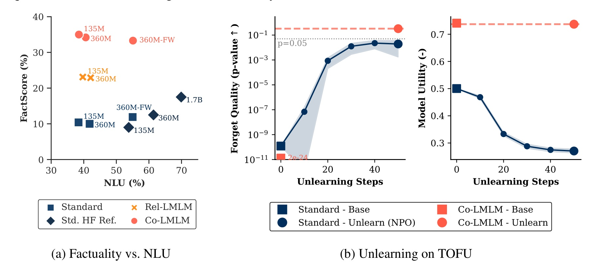
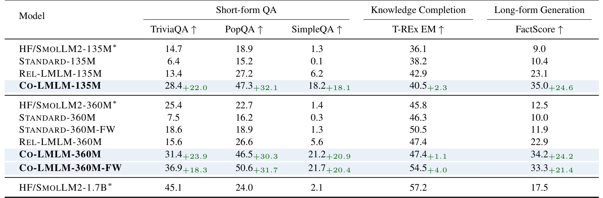
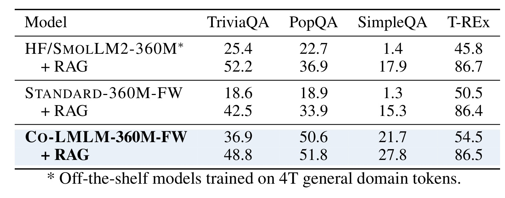
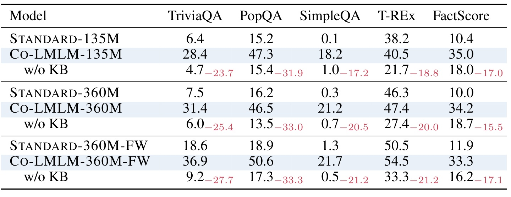
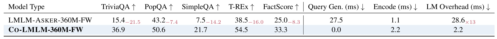
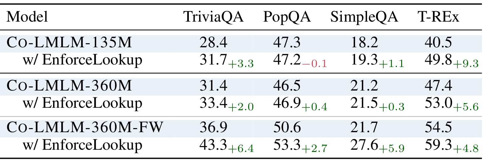

Co-LMLM：Continuous-Query Limited Memory Language Models
[toc]
这篇论文来自 Cornell University，题目是 Co-LMLM: Continuous-Query Limited Memory Language Models，作者包括 Yair Feldman、Linxi Zhao、Nathan Godey、Dongyoung Go、Yilun Hua、Kilian Q. Weinberger、Jennifer J. Sun 和 Yoav Artzi。论文入口是 arXiv:2607.07707。论文首页给出 项目页，事实包中记录的状态是已核验到项目页入口，但本轮没有复现实验代码。它讨论的是 limited memory language model 这条路线：不要让语言模型把事实都压进参数，而是在预训练阶段就把一部分事实外置到可读、可编辑、可归因的知识库里，生成时再按需检索回来。
现有 LMLM 虽然能把事实知识从模型参数移到外部 KB，但关系型表示和显式文本查询让可外置的知识受 Wikipedia 实体页、主谓宾关系、额外 query decoding 成本和预先固定检索路径限制；如果模型要面向更一般的自由文本语料，就需要一种既保留可读文本值、又允许检索 query 连续化和上下文化的记忆机制。
1. 背景和问题
大语言模型的事实知识通常有两种存放位置：一种是模型参数本身，另一种是生成时临时取回的外部材料。参数化知识的优势是推理路径短，模型可以在没有显式检索系统时回答问题；问题是事实和语言能力混在同一组权重里，单个事实难以归因、难以编辑，也难以删除。RAG 则把文档检索接到推理前端，能给模型追加上下文，但它并不强制模型在预训练阶段减少参数记忆：模型仍然可能把常见事实背进参数，RAG 更像是在生成时补充外部证据。论文关注的 LMLM 范式更激进：在预训练数据里显式标出 factual span，训练模型在看到需要事实的位置时触发外部知识库，让模型学习语言能力和检索能力，而不是把所有事实都塞进同一套参数。

Figure 1 把这三个范式画得很清楚。左侧 LLM+RAG 的文档库在模型外部，但 factual knowledge 仍然主要位于模型内部；中间 REL-LMLM 把事实外置成关系型 KB，模型要先解码出类似实体-关系的文本查询，再取回对象；右侧 Co-LMLM 仍然保留可读文本事实值，却把 key 换成连续向量，query 直接来自模型隐藏态。这个差别不是界面上的小改动，而是改变了“哪些知识能被外置”和“模型如何发起检索”两件事。关系型 KB 适合 Wikipedia 中围绕实体组织的事实，但自由文本里的事实常常不是整齐的 subject-relation-object；例如一个句子中的定义、数量、类别、限定条件、事件片段，未必都有先前出现的 subject 和固定 relation 名称。连续 query 让检索意图可以携带当前位置的上下文，而 value 仍然是人能读、能删、能归因的文本 span。
REL-LMLM 的贡献在于证明了“预训练时把事实外置”是可行的，但论文指出它有三个扩展瓶颈。第一，数据预处理依赖 Wikipedia 的文章结构，每篇文章天然围绕一个实体，方便自动构造关系查询；这让 proof-of-concept 成立，却没有自然路径扩展到 FineWeb 这样的通用网页语料。第二，关系三元组要求事实必须能写成对象项，并且 subject 和 relation 要能在上下文里被提到，这会遗漏大量自由形式事实。第三，推理时生成文本 query 有成本：REL-LMLM 或自然语言 query 版本都要额外解码若干 token，且 query 的词面形式会约束检索表达力。Co-LMLM 的目标是保留 LMLM 的可编辑、可归因、可直接删除等控制性，同时把 query 从离散文本改成模型自身可学习的连续向量。
这篇论文因此可以看成对 RAG 和显式记忆模型之间边界的一次重新划线。它不是说 RAG 没用，后面的实验反而证明 RAG 可以叠加在 Co-LMLM 上继续提升；它真正要解决的是预训练阶段事实记忆的组织方式。如果模型在训练时已经学会把 factual span 作为外部 value 管理，那么知识库不仅是推理前的补丁，而是模型能力结构的一部分。对推荐、搜索或广告链路里的用户画像、商品事实、政策规则、长尾实体知识来说，这种结构的吸引力在于：事实可以有来源、可以批量更新，也可以在合规或遗忘需求下直接删除；但风险同样明显，检索触发时机、索引覆盖、value 粒度和训练成本都会成为系统瓶颈。
我理解作者把问题压缩到一个很具体的矛盾：模型需要事实来流畅生成，但事实又是最不该永久焊进参数的内容，因为它会过期、会有来源争议，也会遇到删除和审计要求。REL-LMLM 已经把这个矛盾暴露出来，却仍把 query 绑在关系表达上；Co-LMLM 的连续 query 则试图让模型用上下文隐藏态提出更灵活的检索需求，同时不放弃文本 value 的可解释性。这也是它和纯向量记忆层的差别：记忆入口可以连续化，记忆内容仍然要能被人看懂。
2. 方法
2.1 连续工具调用式推理：用 hidden state 直接发 query
Co-LMLM 是一个 decoder-only Transformer，它同时扮演语言模型和 dense retriever。外部记忆是 key-value store：key 是模型产生的连续向量，value 是文本 factual span。推理时模型像普通自回归模型一样逐 token 生成；一旦生成特殊的 <FACT> token，就读取该位置最后一层 hidden state，把它当作向量 query 去检索索引，取回 top-1 fact text snippet，然后把这个 snippet 插入上下文，并机械地追加 </FACT>，接着从 </FACT> 之后继续解码。这意味着 query 不再是模型写出来的一句话，而是当前位置隐藏态携带的连续检索意图。

Figure 2 上半部分展示原始文本如何被标成 factual span 和 paired question，中间展示训练时文档流和问题流共享同一个 Transformer backbone，下半部分展示推理时 <FACT> 触发 dense retrieval。图里最值得注意的是，returned value 仍然是可读文本，例如 carotenoids 这样的事实片段；不可读的是 key 和 query。这样做避免了“外部记忆完全变成黑盒向量库”的问题，因为人仍然可以检查、替换、删除 value；也避免了 REL-LMLM 的文本 query 约束，因为 hidden state 可以表达比自然语言短查询更细的上下文。代价也很清楚：每次检索会增加一个 <FACT> 生成步，并把 retrieved span 放进上下文，所以它不是零成本记忆，而是把成本从多 token query decoding 压缩到一次触发和一次索引查询。
2.2 训练目标：不让模型背 fact span，而让它学会何时取回
训练数据是带有 <FACT> 和 </FACT> 标记的原始文本，每个 fact span 还配有一个问题 Q，问题的答案就是对应 span。论文的关键设计是：next-token prediction 不再覆盖 fact span 内部那些 token，因为这些 token 正是希望外置的知识。如果仍然要求模型预测这些事实 token，模型就会继续把它们记进参数；Co-LMLM 只优化非 fact 位置，并保留 opening <FACT> token 的 loss，因为模型必须学会在正确位置发起检索。
符号解释：x 是带 fact 标记的文档序列，x_t 是第 t 个 token，p(x_t \mid x_{<t}; \theta) 是 Transformer 参数 \theta 给出的下一个 token 概率。M 表示被排除出 NTP 的位置集合：它包含 fact span 内部 token 和 closing </FACT>，但不包含 opening <FACT>。这个公式的直觉是把“知道何时需要事实”和“背出事实内容”拆开；模型仍要学会生成 <FACT>，却不靠语言建模 loss 去记住被标出的事实本身。如果 M 的定义过宽，模型可能丢失必要的语言连续性；如果 M 的定义过窄，事实又会回流到参数记忆里。
2.3 双向 InfoNCE：把文档中的 fact query 和问题 query 拉到一起
只屏蔽 NTP 还不够，因为模型还需要知道 hidden state query 应该检索哪个 value。论文用 paired question 来提供检索监督。对文档中某个 fact 的 opening <FACT> 位置，取 hidden state f；对该 fact 对应问题末尾的 <FACT-q> 位置，取 hidden state q。f 和 q 是正样本，batch 里其他 question/fact 表示是负样本。作者用双向 InfoNCE，让文档 query 能找到问题 query，也让问题 query 能找到文档 fact query。
符号解释：B 是当前 batch 中 paired fact/document query 的数量，f^{(i)} 是第 i 个文档 fact query，q^{(i)} 是与它对应的问题 query，\tau 是 temperature。分子表示正样本相似度，分母把 batch 内所有候选作为竞争项。双向平均的意义是让两个 embedding 空间在共享 backbone 下互相校准，而不是只训练一种检索方向。论文默认把 contrastive loss 和 NTP 加在一起：
符号解释：\lambda 控制检索表示学习相对语言建模的权重，论文默认设为 0.25。这个联合目标让模型一方面保持普通语言建模能力，另一方面把 <FACT> 位置的 hidden state 对齐到能取回对应事实的向量空间。这里的训练信号很巧妙：问题 Q 在训练时出现，是为了形成对比监督；推理时模型不需要把 Q 生成出来，因此绕开了自然语言 query 的 token 开销。
2.4 标注与索引：从自由文本 span 构造可读、可编辑的连续键值记忆
为了让方法不局限于 Wikipedia，论文设计了三阶段标注管线。第一步用 Gemini 3.1 Pro 给一小批 seed documents 做标注，格式是 <FACT q=... a=...>span</FACT>。第二步把 seed set 蒸馏成两个轻量 annotator：一个 ModernBERT encoder 做 BIO token tagging，找出原文里的 fact span；另一个 Qwen2.5-1.5B-Instruct decoder 用 LoRA 训练，基于插入 span markers 的文档生成 question-answer pair。第三步把两个 annotator 应用于完整预训练语料，包括 Wikipedia 和 FineWeb-Edu。

Figure 3 说明为什么作者没有用一个端到端生成器直接吐出整篇标注文本。span annotator 预测的是原文 offset，所以 span 本身天然是 source document 的 verbatim substring，能降低长文生成式标注的漂移风险；question generator 只生成问题和答案，不重写整篇文档，因此可以复用文档 KV cache，成本更低。这个设计和 Co-LMLM 的目标一致：value 必须保持可读、可归因、可编辑，query 监督可以由问题提供，但推理时不需要问题文本。索引构建则在预训练后执行：模型扫过带 fact 标记的语料，抽取每个 <FACT> 位置的 L2-normalized hidden state 作为 key，把原文 fact span 作为 value，构建 Faiss dense index。
这套方法的一个重要边界是，标注质量会直接决定外部记忆质量。过短的 span 可能缺上下文，过长的 span 会把无关文字塞进检索结果；问题如果泄露未来事实，训练时 query 会被污染；问题如果太泛，contrastive negative 又不足以区分细粒度事实。论文用 two-annotator pipeline 缓解这些问题，但没有完全消除它们。对工程落地来说，真正要监控的不只是 final QA 分数，还包括 fact span coverage、span 粒度分布、query 触发率、retrieval miss、retrieved value 是否能被用户或审计系统解释。
3. 实验结果
3.1 Perplexity：外置事实没有削弱语言建模，反而降低了 factual text 的困惑度
论文在 SmolLM2-135M 和 SmolLM2-360M 架构上从随机初始化训练 Co-LMLM，并训练同规模 STANDARD baseline；还重建了更强的 REL-LMLM baseline，以控制 backbone、训练步数和数据配置。Wikipedia 训练使用约 3B tokens，高质量语料；FineWeb-Edu 扩展实验采样 90B tokens。Perplexity 主要在 Simple English Wikipedia 的 1000 篇 held-out articles 上测试，因为这些文章不在预训练语料中，但底层事实大概率能被 Wikipedia index 以不同表述覆盖。作者报告 static oracle 和 dynamic 两种 PPL，static 给出正确 retrieved span，dynamic 执行真实 lookup，所以更接近使用场景。

Figure 4 的结论是 Co-LMLM 在同规模下 consistently lower PPL。135M 下 STANDARD 是 14.4，Co-LMLM dynamic 是 11.8，static 是 11.6；360M 下 STANDARD 是 14.0，Co-LMLM dynamic 是 10.5，static 是 7.4。FineWeb-Edu 扩展后，360M-FW 的 dynamic/static PPL 分别进一步到 9.6 和 7.7。右图更有意思：当 index 从 Wikipedia 240M entries 扩到 Wikipedia+FineWeb 2.2B entries，在 Simple-Wiki 上没有明显收益，因为 Wikipedia 已覆盖该测试集大部分事实；在 FineWeb held-out 上，combined index 明显降低 PPL，说明外部记忆的 coverage 仍是关键变量。也就是说，Co-LMLM 的收益不是单纯来自模型结构，而来自“训练时外置事实 + 推理时有足够覆盖的 index”二者共同作用。
这里要保留两个 caveat。第一，作者也承认和 off-the-shelf HF/SmolLM2 的比较有 domain confounder，因为那些模型训练数据多得多，但训练域和本文测试域不完全一致。第二，dynamic PPL 对 <FACT> token 触发概率的处理并不完美，附录还给出 dynamic-normalized 变体。因此更稳妥的解读是：在受控同语料、同规模设置下，Co-LMLM 比 STANDARD 更会处理 factual text；在跨域或跨训练规模比较时，这个数字只能作为趋势参考。
3.2 Factuality：事实精度提升明显，但不是普通 RAG 的替代品
论文用 TriviaQA、PopQA、SimpleQA Verified、T-REx、FactScore 五类评估覆盖短问答、长尾实体、严格事实问答、知识补全和长文本 biography 事实精度。所有 factuality evaluation 用 greedy decoding；对 REL-LMLM 和 Co-LMLM，retrieved factual spans 在 scoring 前移除，以避免把检索文本直接算作模型生成答案。这一点很重要，否则外部记忆模型可能因为把证据塞进输出而被高估。

Figure 5a 把 FactScore 和 NLU 放在一张图里。Co-LMLM 的点整体向上移动，说明事实性提升没有伴随 NLU 大幅下降；360M-FW 版本 FactScore 明显高于 STANDARD 和 REL-LMLM，同时 NLU 仍保持同规模模型可比。Figure 5b 则展示 TOFU unlearning：Co-LMLM 通过删除 KB entries 实现 forgetting，forget quality 很快越过 p=0.05 的阈值，同时 utility 曲线保持稳定；训练式 unlearning 的 NPO baseline 则因为更新参数而牺牲 utility。这个结果是 LMLM 范式的重要卖点：事实不只被检索，还被放在可以直接操作的位置。

Table 1 是主 factual precision 证据。以 360M 规模看，STANDARD-360M 在 TriviaQA、PopQA、SimpleQA、T-REx、FactScore 上分别是 7.5、16.2、0.3、46.3、10.0；Co-LMLM-360M 则是 31.4、46.5、21.2、47.4、34.2，短问答和 FactScore 的绝对增益都很大。FineWeb-Edu 版本进一步把 TriviaQA 提到 36.9、PopQA 50.6、SimpleQA 21.7、T-REx 54.5、FactScore 33.3。作者还报告 360M-FW 的 SimpleQA Verified 表现与 gpt-4o-mini 同线、高于 Claude Sonnet 4.5；这个对比很吸引眼球，但应该按论文自己的提示理解为 leaderboard contextualization，而不是同训练预算的严格公平比较。真正扎实的结论是：在同 backbone、同预训练设置下，连续查询和自由文本 span externalization 明显强过 STANDARD，也强过重建后的 REL-LMLM。

Table 2 说明 Co-LMLM 和 RAG 是互补关系。BM25 top-4 Wikipedia passages 的 RAG 能显著提升标准模型，例如 STANDARD-360M-FW + RAG 的 TriviaQA 从 18.6 到 42.5，T-REx 从 50.5 到 86.4。Co-LMLM 本身已经有较高事实性，但加 RAG 后仍有收益：Co-LMLM-360M-FW 的 SimpleQA 从 21.7 到 27.8，T-REx 从 54.5 到 86.5。这个结果避免了一个常见误解：外部化预训练记忆不是要取消 inference-time retrieval。更合理的系统形态可能是双层记忆：Co-LMLM 管理模型训练中应外置的稳定 factual spans，RAG 在生成时补充更长、更上下文化、更实时的文档证据。
3.3 消融和效率：连续 query 有收益，但检索触发时机仍未完全解决
如果 Co-LMLM 的事实能力来自外部 KB，那么关掉 KB 应该显著掉分。Table 3 正是这个检验。作者在 no KB retrieval ablation 中让模型只能依赖内部参数，结果多个事实指标大幅下降。

Table 3 对 360M-FW 版本最有说明力：TriviaQA 从 36.9 降到 9.2，PopQA 从 50.6 降到 17.3，SimpleQA 从 21.7 降到 0.5，T-REx 从 54.5 降到 33.3，FactScore 从 33.3 降到 16.2。这个模式支持作者的核心主张：Co-LMLM 并不是只在模型参数里学到更好的事实表示，然后把 KB 当作装饰；事实确实被迁移到外部记忆路径中。值得注意的是，w/o KB 后 FactScore 仍不是零，说明模型仍会保留一些参数化知识和语言先验；外置不是绝对清空，而是在训练目标上显著改变知识分布。
论文还把 Co-LMLM 和 LMLM-ASKER 对比。LMLM-ASKER 使用同样 annotated corpus，但每次检索前生成自然语言问题，再用单独 encoder 编码问题检索。这个 baseline 能隔离“自由文本 span”与“连续 query”两件事：如果自由文本 value 已经足够，LMLM-ASKER 应该接近 Co-LMLM；如果 hidden-state continuous query 本身有贡献，Co-LMLM 应该更强。

Table 4 显示 Co-LMLM-360M-FW 在 TriviaQA、PopQA、SimpleQA、T-REx、FactScore 上分别是 36.9、50.6、21.7、54.5、33.3，而 LMLM-ASKER 是 15.4、43.2、7.5、38.5、25.0。效果差距之外，开销差距更直接：LMLM-ASKER 每次 retrieval 要花约 27.5ms 生成自然语言 query，再花 1.1ms encode，总 model-side overhead 28.6ms；Co-LMLM 不生成 query 文本，只用一次 <FACT> hidden-state forward，约 2.2ms。这个结果支持论文标题里的 continuous-query：query 连续化不是只为了优雅，而是在表达力和推理成本上都有收益。
不过 Co-LMLM 仍有一个没有完全解决的问题：模型何时应该触发 lookup。作者用 EnforceLookup 做诊断，即在回答前强制模型进行检索，但 query 内容仍由模型自身产生。

Table 5 中，强制 lookup 对多个设置仍有提升。360M-FW 的 TriviaQA 从 36.9 到 43.3，PopQA 从 50.6 到 53.3，SimpleQA 从 21.7 到 27.6，T-REx 从 54.5 到 59.3。这个现象说明 Co-LMLM 的 retrieval representation 已经有价值，但 trigger policy 还不够好：模型有时没有在需要事实的位置生成 <FACT>，或者生成时机不理想。对生产系统而言，这个问题可能比 paper benchmark 更重要，因为过度 lookup 会增加延迟和噪声，lookup 不足又会让模型回退到参数化猜测。后续如果把 Co-LMLM 用到长上下文问答、用户画像事实或企业知识库，应该把 trigger precision/recall、retrieval latency、value provenance 和最终回答引用一起监控。
3.4 控制性与扩展性：unlearning 是亮点，规模仍偏早期
Co-LMLM 的控制性优势主要来自 value 的文本可读性和 KB 的可操作性。TOFU 实验里，作者通过直接删除 forget set 对应 memory entries 来实现 unlearning，而不是训练一个新模型或做参数更新。相比 NPO 这类训练式遗忘，删除外部条目不会让模型整体 utility 大幅下降，这正是 limited memory language model 相比普通参数模型最有工程吸引力的部分。对合规和数据治理场景来说，如果某些事实来源被撤回、用户要求删除、商品信息过期，外部 memory 的更新路径比参数编辑更自然。
扩展性方面，FineWeb-Edu 实验很关键。Wikipedia-only LMLM 容易被质疑只是利用 Wikipedia 结构做了一个漂亮特例；Co-LMLM 通过自由文本 span 标注和连续 key-value index，展示了面向通用网页语料的可能性。论文报告 Wikipedia KB 约 240M items，REL-LMLM KB 约 145M，而加入 FineWeb 后索引到 2.2B entries。更大的 index 在 Simple-Wiki 上不带来明显收益，却在 FineWeb held-out 上显著降低 PPL，这说明知识库 coverage 和测试域匹配度是核心变量。这个结论对实际系统也成立：如果外部记忆只覆盖一小部分结构化事实，模型很快会在长尾域退化；如果索引覆盖广、value 粒度合理，Co-LMLM 才有可能稳定超过普通 LLM+RAG 的组合。
4. 总结
4.1 我的判断
这篇论文的价值在于把 LMLM 从“关系型 Wikipedia 事实外置”推进到“自由文本 span + 连续 query + 可读 value”的形态。它没有把知识库完全黑盒化，因为 value 仍然是文本；也没有沿用 REL-LMLM 的显式文本 query，因为 query 直接由 hidden state 产生。这个折中很有意思：模型内部学的是何时检索、如何检索和如何继续生成，外部存的是可审计的事实材料。实验结果也比较完整，覆盖 PPL、factual precision、RAG 叠加、无 KB 消融、query 形式对比、lookup timing 和 TOFU unlearning，主张之间能互相支撑。
如果从工程视角看，Co-LMLM 更像是一种预训练阶段的知识架构，而不是单独的推理插件。它适合那些事实变更、来源归因、删除需求和长尾覆盖都很重要的场景；但它要求数据标注、索引构建、触发策略和评估体系都前移到训练阶段。这比普通 RAG 重得多，也更难热插拔。因此我不会把它理解成短期替换 RAG 的路线，而是理解成“下一代可控事实记忆模型”的研究原型：它告诉我们参数、检索器和可编辑 memory 之间可以怎样重新分工。
4.2 局限和后续跟进
第一，实验规模仍然偏小。360M 级别和 90B token FineWeb-Edu 采样足以验证方向，但距离真正生产级 LLM 的模型规模、训练 token 和索引运维复杂度还有距离。第二，factuality 评估仍以 Wikipedia-style knowledge 为主，虽然 FineWeb 扩展给出积极信号，但更开放的企业知识、实时新闻、商品库、用户行为事实是否同样有效，还需要额外验证。第三，trigger timing 仍是明显瓶颈，Table 5 说明强制 lookup 还能提升，意味着模型尚未完全学会何时应该查。第四，标注管线依赖 frontier model seed annotation 和两个 distill annotators，span 质量、question 泄漏、答案表述漂移都会影响最终 KB。第五，索引规模从 240M 到 2.2B entries 后，内存、量化、Faiss placement、更新和删除一致性都变成系统问题，论文只初步讨论了这些成本。
后续我会重点跟三条线。第一是 trigger policy：能否把 lookup decision 单独评估成 precision/recall，并用校准或强化学习减少漏查和过查。第二是 value 粒度：自由文本 span 到底应该多短、多长、是否需要层级化，直接决定检索结果能否被模型自然接回上下文。第三是 Co-LMLM+RAG 的组合方式：Table 2 已经说明两者互补，但真实系统里还要决定哪些知识进入预训练 memory，哪些留给在线文档 RAG，二者的冲突如何仲裁。对推荐和搜索系统而言，最值得借鉴的不是某个 benchmark 数字，而是“把可审计事实从模型参数中分离出来，同时让模型学会连续化访问它”的架构思路。